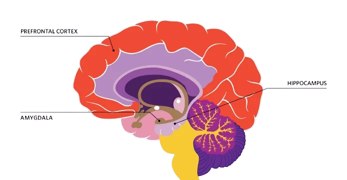
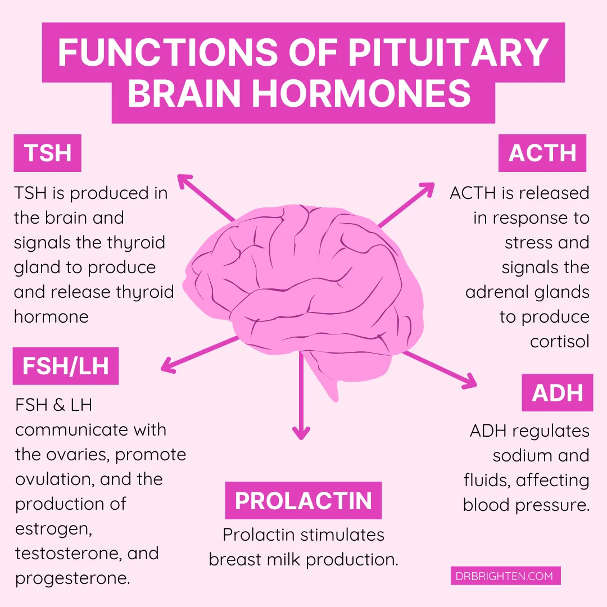
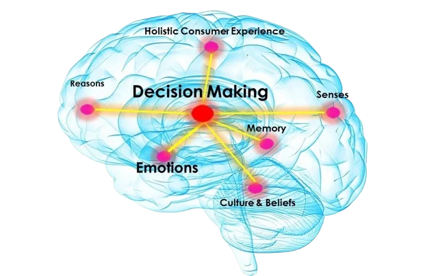

Unveiling the Mysteries of the Human Brain: Exploring Its Power and Potential
Drs. Greg Dunn and Brian Edwards, both artists and scientists, collaborated on Self Reflected, using reflective microetching to unveil the intricate neural choreographies within the human brain. This artwork serves as a reminder of the extraordinary nature of our minds and our shared humanity.
Mastering Fear: Specialized Exercises for Combat Situations.
The amygdala is the central command center for emotional reactions, particularly fear.
The frontal cortex is the second floor of the brain, involved in rational thought and problem-solving. It helps control the amygdala's fast reactions to potential threats.

Recruits are put through specialized training to change the way their brains react to fear
By exploring the intricacies of the brain's fear circuitry, the program leverages this knowledge to design exercises that reshape neural responses to fear-inducing stimuli. Neuroscientific insights guide participants in rewiring their brain's automatic fear reactions, promoting adaptive changes in the amygdala and prefrontal cortex. Through this neuroscience-informed approach, the program enhances individuals' neural plasticity, fostering resilience and facilitating more controlled responses to fear in high-pressure combat situations.
Take a Breath and Overcome: Mastering Stress for Success
In the pursuit of stress relief, understanding the intricate interplay between neuroscience and well-being unveils powerful strategies. These evidence-based techniques leverage the brain's inherent capabilities to mitigate stress and enhance mental resilience.
Deep Breathing
Mindfulness Meditation
Aerobic Exercises
Social Connections and Oxytocin
Quality Sleep and Cortisol Regulation
Cognitive Behavioral Techniques like reframing negative thoughts

Revolutionizing Decision-Making: How Advanced Technology Can Enhance Tactical Response

The frontal cortex is the part of the brain that makes us most human. By integrating insights into the brain's neural pathways, these innovations empower individuals to process information rapidly, adapt to dynamic scenarios, and execute precise responses in high-pressure situations. The synergy between cutting-edge technology and the complexities of the human brain holds the key to a paradigm shift in tactical decision-making, ushering in a new era of heightened efficiency and effectiveness..
Being in Zone How Tiger Woods Modulates his Brain to Succeed in Golf
Tiger Woods' consistent success is attributed to his adept ability to modulate his brain functioning, even though scientists can't directly scan his brain in action. Observing subtle cues, such as minimal eye blinking during a putt, hints at his low anxiety levels and a state resembling a drowsy, yet highly concentrated state. This phenomenon aligns with the concept of the "flow state," where athletes experience a unique feeling of being in the zone. This state, characterized by effortless movements, results from a harmonious interplay between practiced cerebellar functions, focused frontal lobes, and low anxiety levels within the amygdala of the limbic system, offering insights into the neurobiology behind peak athletic performance.